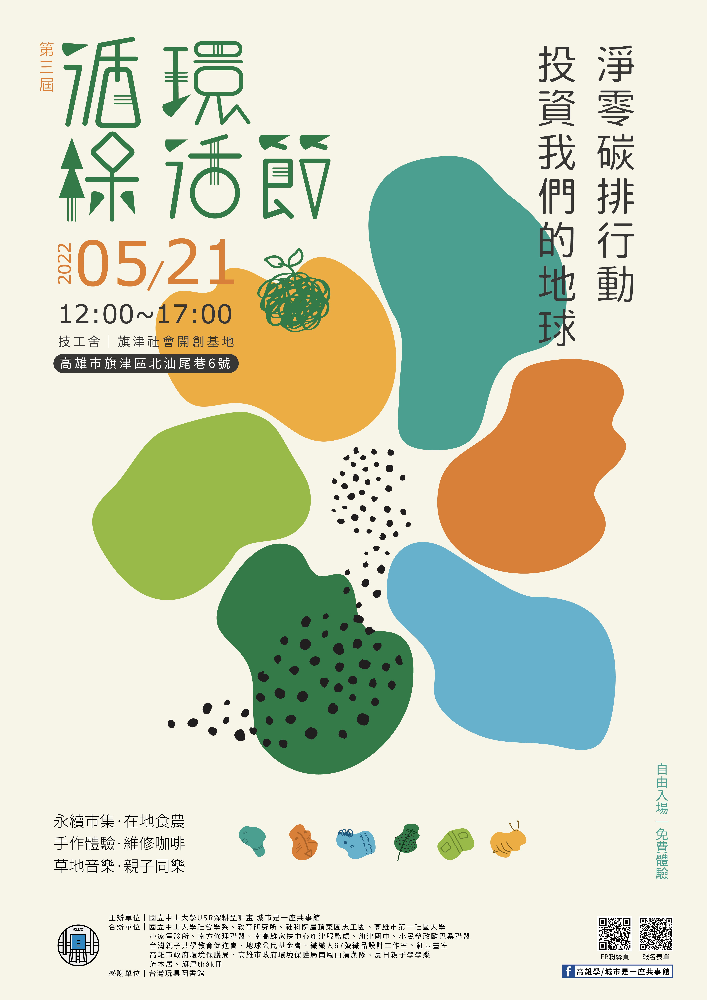

循環綠活節

國立中山大學USR深耕型計畫「城市是一座共事館」，於中山大學旗津社會開創基地舉辦「2021循環綠活節」，藉由維修、循環使用、共享、都市菜園等，推動永續轉型。活動適逢地球日之後、母親節前夕，上百位民眾一起用日常行動修復地球，向大地之母致敬。
國立中山大學「永續發展與社會創新微學程」負責人、社會學系副教授邱花妹說明「循環綠活節」意涵，她提到，面對氣候危機與生態環境問題，地球已無法負荷當前的計畫性淘汰與線性經濟的發展模式，大學社會責任可以是大學串聯在地公民團體、公私部門與市民朋友，藉由實際行動在學校、社區、鄉鎮或城市中推動永續轉型。現場正式啟用基地的聯合國17項永續發展指標（SDGs）互動式背板，活動也呼應了包括「責任生產及消費」、「保育海洋生態」、「氣候行動」、「永續城鄉」、「可負擔的潔淨能源」、「優質教育」及「多元夥伴關係」等多項指標，未來也將持續進行相關推廣活動，邀請更多市民加入日常生活的環境革命。
「循環綠活節」活動多元，如邱花妹開設「社會調查與研究方法」，課程學生以展覽呈現廢棄漁繩網的循環使用可能性；也從回收站取得廢棄漁網、由藝術家「織織人」帶領民眾編織成提袋賦予廢棄物新生。中山大學「社科院屋頂菜園志工團」也至現場推廣當前正夯的都市菜園、可食地景，帶著親子動手種植香草、調製香草茶。「小民參政歐巴桑聯盟」與「台灣親子共學教育促進會」則帶來自製的自然遊具、兒童二手衣物交換，以及環保主題繪本說書；另有山津塢大漁旗明信片絹印、以回收瓦楞紙製作紙影戲偶與操演、玩具圖書館、紅豆畫室親子戶外寫生，讓大人小孩可以在草地上共享綠色生活。
此外，為提倡能源轉型、讓市民認識再生能源，「台灣公民自主發電行動聯盟」展示太陽能發電與儲電系統，並現場利用太陽能發電，當場製作爆米花與刨冰，活動大受歡迎。而為了鼓勵在地飲食，綠色消費與綠色交通，除了有旗津在地青年手作甜點擺攤，高雄市府環保局也協助市民辨識環保標章、碳足跡標籤、MIT微笑標章、在地農產品CAS標章、有機農產品標章與TAP產銷履歷。YouBike也在現場提供有意願的民眾進行城市共享腳踏車的系統登錄。
其中，「維修咖啡館」社區活動極具循環永續精神，由邱花妹推動的「南方修理聯盟」成員合作辦理，包括中山大學「服務學習：永續發展與服務體驗」學生志工、「高雄市第一社區大學」家電班、「小家電診所」維修志工。「維修咖啡館」讓市民有機會透過修理延長家電壽命，實踐循環綠生活。當天共計有19件物品送修，修復率42%，成功阻止18.91公斤的家電垃圾被丟進焚化爐，潛在減少166.5公斤的碳排放。
一位帶家電來維修的民眾表示，原先不抱期望地帶著家電來試看看，「沒想到維修志工真的可以把它修好」。過程中，他也跟著維修志工學到簡單的維修技巧，讓他興起自己動手學修理的想法。中山大學社會系大二學生李霽洋在此次活動擔任氣候志工，他表示，活動讓他印象最深刻的莫過於維修咖啡館，透過與社區大學合作，有許多厲害的師傅免費幫居民們維修日常用品，在這過程當中，維修活動除了幫助延長產品的生命週期，減少碳排放之外，更有意義地是，人與人之間的關係也被串連起來，讓在地感情更加活絡。
費用：自由入園、免費體驗
地點：技工舍｜旗津社會開創基地
地址：高雄市旗津區北汕尾巷6號（正門由中洲三路374巷進入）
主辦單位｜國立中山大學USR城市是一座共事館計畫